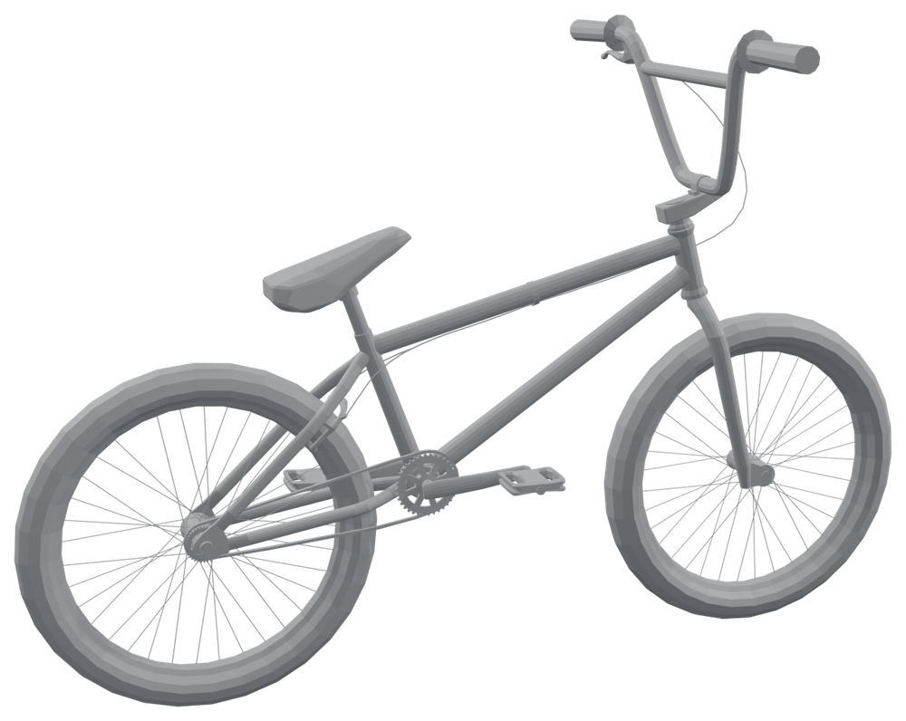
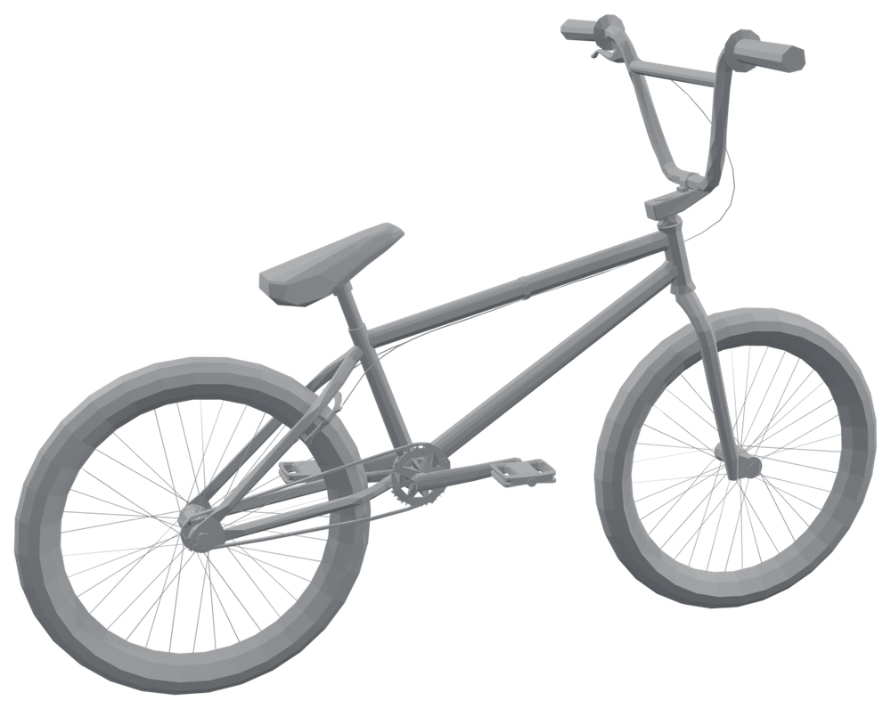
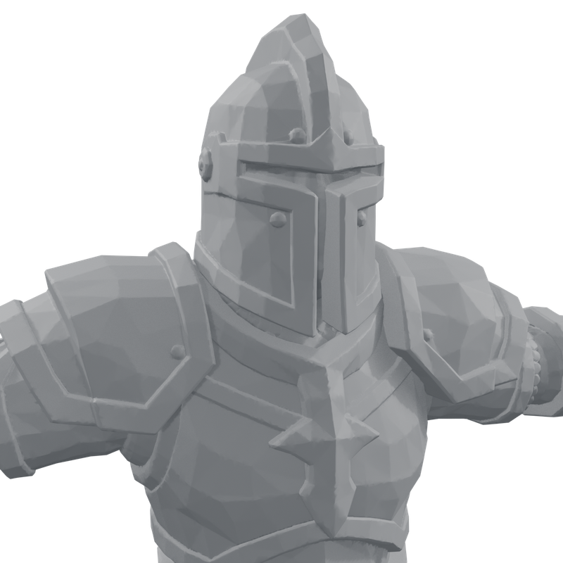
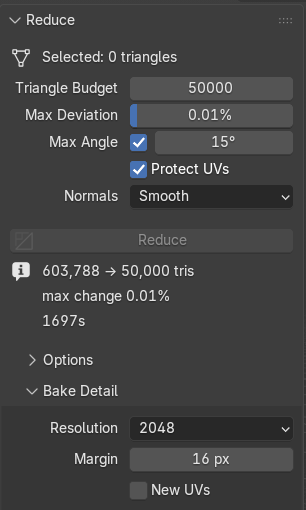
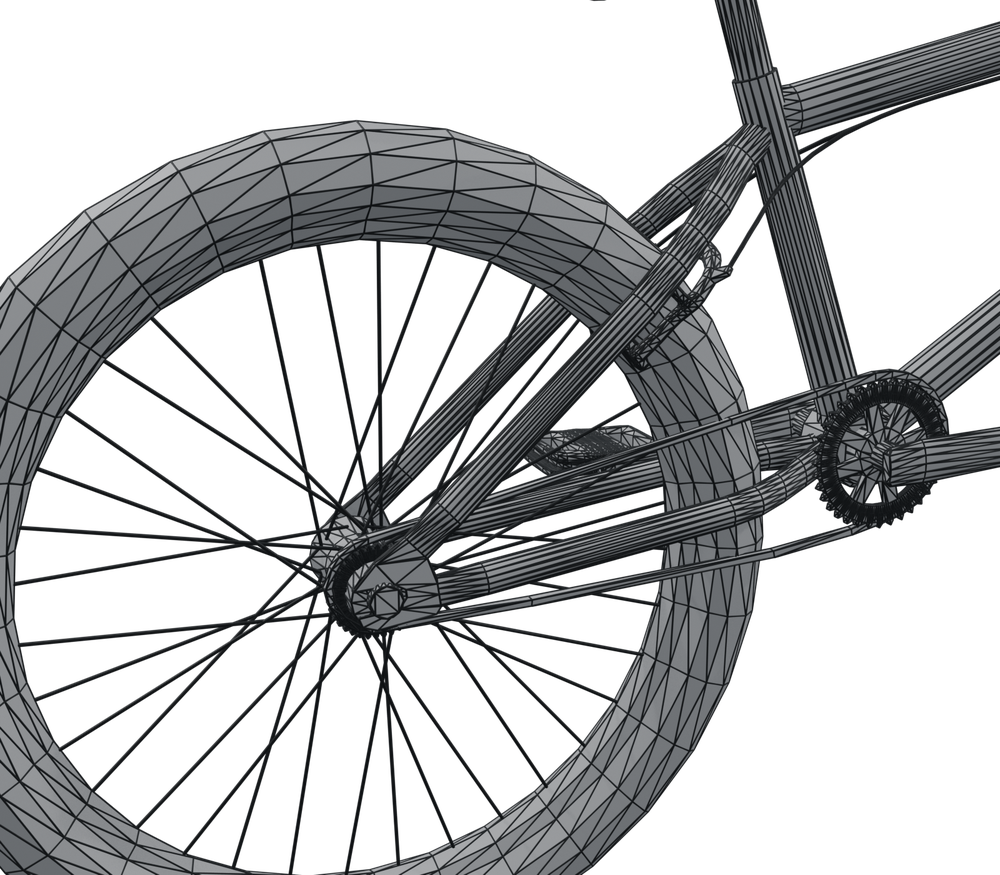
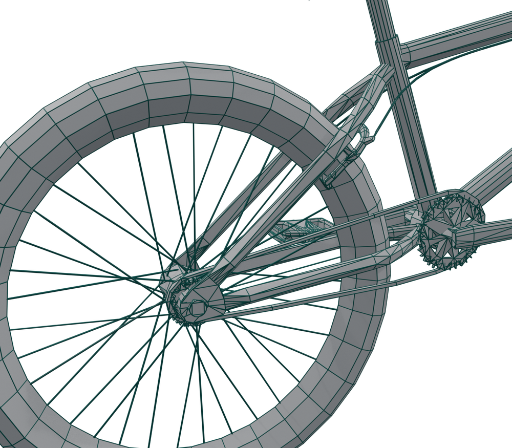
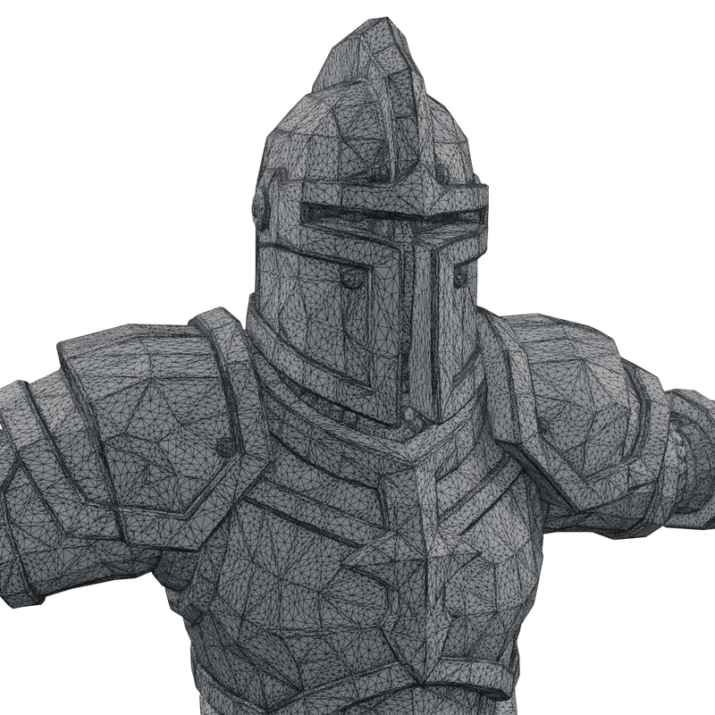
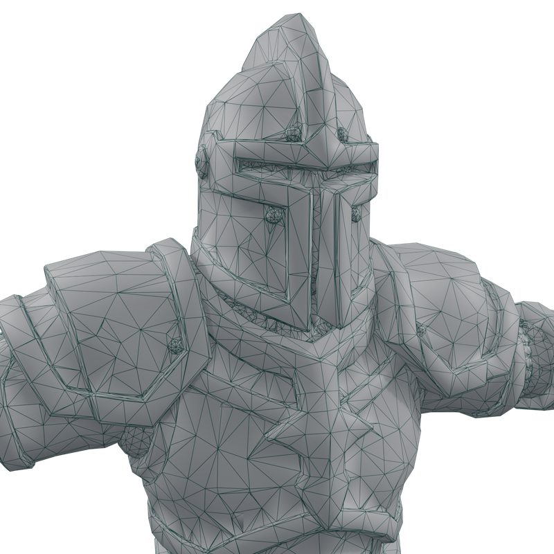
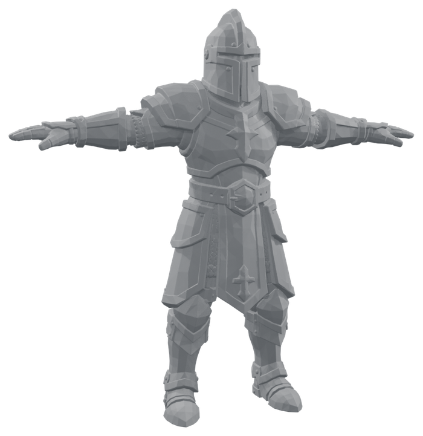
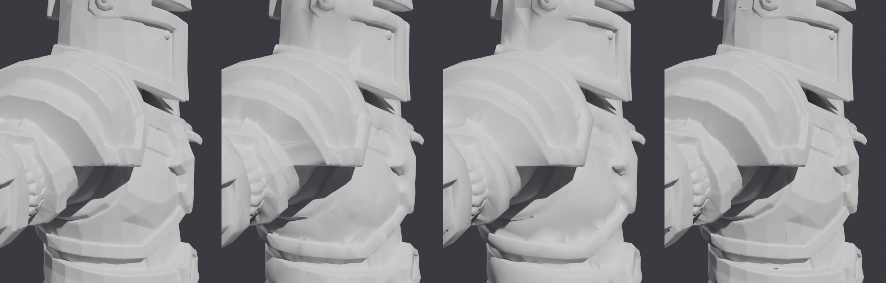

TrueShape
Cut the triangle count of any model without changing its shape, then bake the fine detail back as a normal map.
- Version 0.5.0
- Blender 4.2 and later (tested on 5.2)
- Windows, macOS, Linux
- Pure Python, nothing to compile

Original21,510
After Reduce~10,00001What TrueShape does
TrueShape has two tools, found in the 3D Viewport sidebar (press N) under the TrueShape tab.
Reduce
Removes triangles until your selection fits a triangle budget. It never moves or invents a vertex: the result is built only from vertices the model already had. That is why thin parts such as tubes, spokes and straps cannot shrink, and why UVs stay exact.
It removes the cheapest things first, across every selected object at once, so the budget goes where the model needs it:
- Whole edge loops that carry no shape (for example, the extra rings along a straight tube). This keeps clean quad flow.
- Single vertices where there are no clean loops, merged into a neighbour.
Every removal is measured against the original: how far it moves the surface, and how far it turns it. Reduce never makes a change that goes past the limits you set, and it tells you if the budget could not be reached within them.
Bake Detail
Detail smaller than the new triangles cannot survive any reduction. Bake Detail puts it back into the lighting: it bakes a normal map from the original onto the reduced model, the standard way game assets look dense while staying light.

Original604kFaces or triangles?
Reduce removes vertices, counts triangles, and keeps quads and n-gons wherever it can. The budget is in triangles because that is what GPUs draw and what game engines report, and because a face count is ambiguous: a quad is two triangles, a six-sided n-gon is four.
So with Blender's Statistics overlay on, a result on budget reads something like Triangles 10,000 and Faces ~6,000. That is expected. If you need an all-triangle mesh, add a Triangulate modifier or let the exporter triangulate; the triangle count does not change.
02Installing
- In Blender, open Edit › Preferences › Get Extensions.
- Click the ⌄ menu at the top right and choose Install from Disk…
- Pick
trueshape-0.5.0.zip. The add-on is enabled straight away.
You can also drag the zip file onto the Blender window.
03Quick start

- In Object Mode, select the object(s) you want lighter. The panel shows how many triangles are selected.
- Set Triangle Budget to your target, for example 10,000.
- Leave the other settings at their defaults for a first try.
- Click Reduce. A progress bar replaces the button. You can orbit the view while it works; press Esc to cancel.
- A new object called
<name>_lowappears next to each original. The originals are hidden, never changed. - If fine surface detail looks softer, keep the new object selected and click Bake Detail.
_low objects and unhide the originals with Alt H.04Tutorial: a game-ready prop
Goal: a 21,510-triangle BMX bike (nine separate parts: frame, fork, wheels, chain, brake and so on) under 10,000 triangles, looking the same, with every part still separate so the wheels can spin.
- Select all nine parts. Reduce shares one budget across everything selected, and spends it where it matters: the chain and spokes keep their triangles while flat plates and straight tubes give theirs up.
- Set Triangle Budget to 10000.
- Set Max Deviation to 1% (the default). The bike is about 5 units across, so no point of the surface may move more than about 5 cm.
- Untick Max Angle (Keep Surface Detail). This bike is stylised and flat-shaded, so its facets are meant to show; protecting every small facet would stop Reduce at about 12,600 triangles.
- Leave Protect UVs on, because the bike is textured.
- Click Reduce. About 10 to 20 seconds later there are nine
_lowobjects with about 10,000 triangles between them.

Original21,510
After Reduce~10,000_low object keeps its original's location, rotation (including quaternion rotation), scale, parent, collections, materials, vertex group weights, modifiers, constraints and animation. A wheel that spun before still spins.05Tutorial: a dense character with baked detail
Goal: a 604,000-triangle AI-generated knight (no UVs, crisp armour bevels and hammered plates) down to 50,000 triangles for a game, keeping its look.
Step 1: see how much detail geometry can keep
Run Reduce once with Keep Surface Detail on at 15°. On this knight it stopped at about 130,000 triangles with the report "budget not reached". That is useful information: keeping every bevel as real geometry needs about 130k triangles. At 50k, the finest detail has to live in a normal map instead.
Step 2: reduce to the budget
- Select the original knight.
- Triangle Budget 50000, Max Deviation 1%.
- Untick Max Angle (or raise it to about 30°). The bake will restore the lighting detail, so geometry only has to hold the silhouette.
- Normals: Smooth. The bake is computed against these normals.
- Click Reduce. A 604k mesh takes several minutes; the progress bar shows how far it has got.

Original603,788
Reduced50,000Step 3: bake the detail back
- Keep
medieval_knight_paladin_lowselected and active. TrueShape knows which original it came from. - Resolution 2048, Margin 16 px.
- Click Bake Detail. The knight has no UVs, so TrueShape unwraps it first, then Blender bakes in the background (progress in the status bar, Esc cancels). On the test machine the 2048 bake took about 4 seconds.

Original604k
06Reduce: every setting
| Setting | What it does | Use it / raise it when | Avoid / lower it when |
|---|---|---|---|
| Triangle Budgetdefault 10,000 | Total triangles for everything selected together. N-gons count as the triangles they would split into. | Set it to the real target: a game's per-asset budget, or a level-of-detail step (LOD1 about 50%, LOD2 about 25%). | Don't expect any budget to be met at any cost. If a limit below stops Reduce first, the report says so; loosen that limit or bake instead. |
| Max Deviationdefault 1%, min 0.01% | The furthest any part of the surface may move, as a share of the selection's size (its bounding-box diagonal). | 0.5–2% for game assets seen at normal distance. Raise it if Reduce stops early and the result still looks right. | 0.1–0.3% for close-ups or hero assets. At the minimum, 0.01%, almost nothing may move, so Reduce often stops long before the budget. |
| Max AngleKeep Surface Detail, on, 15° | The furthest any part of the surface may turn. Lighting follows surface direction, so this protects bevels, creases and small facets that barely move the surface but change how it looks. | Keep it on for untextured or unbaked assets, and anything with crisp hard-surface detail. Lower it (10°) to keep more detail. | Turn it off, or raise it to 25–35°, for stylised low-poly models whose facets are meant to show, and whenever you will use Bake Detail afterwards. |
| Protect UVson | Keeps UV seams exactly, and skips any removal that would slide the texture by more than UV Tolerance. | Any textured model you will keep using with its current textures. | Untextured models, or ones you will re-unwrap and re-bake anyway. Turning it off lets Reduce go further. |
| NormalsSmooth | Smooth recomputes normals from the reduced shape; marked sharp edges stay sharp. From Original gives each kept vertex the exact normal it had on the original. | Smooth: almost always, and always before Bake Detail. From Original: smooth organic models whose authored lighting you want to match without baking. | From Original on flat-shaded or faceted models; the original's per-face look can't be carried by fewer faces. |
07Reduce Options: every setting
Under Reduce › Options. The defaults suit most models.
| Setting | What it does | Raise it when | Lower it when |
|---|---|---|---|
| UV Tolerance0.002 | How far, in UV units, the texture may slide under a removal (0.002 is about 4 pixels on a 2048 texture). | Textures are low-resolution or blurry, and you want more reduction. | The texture has pixel art, text or decals that must not shift. |
| Pair Triangles10° | Before reducing, joins triangle pairs that are nearly flat into quads, so Reduce can find edge loops to remove. | The model was triangulated on export and you want cleaner quad flow in the result. | 0° keeps triangles as they are; Reduce then works vertex by vertex. |
| Weld0.00001 | Merges vertices closer than this share of each object's size. Fixes models imported with every face split apart (OBJ, STL, game rips). | The model has tiny gaps between faces that should touch. | Separate parts sit very close together and must stay separate (layered clothing, stacked plates). 0 never merges. |
| Keep Modifierson | Gives each reduced copy its original's modifiers, unapplied: Armature, Mirror, Subdivision and the rest. Hooks follow their vertices. | Turn it off when you want only the bare reduced mesh. See what is kept for the few modifiers that can't follow. | |
| Keep Shape Keyson | Carries every shape key over with its value, range and drivers. Each kept vertex sits exactly where it did in every key. | Turn it off for static props and distant LODs that don't need them: every key adds to the file and to export size. | |
| Hide Originalon | Hides the source objects after Reduce. They are never modified either way. | Turn it off to see before and after side by side. | |
08Bake Detail: every setting
| Setting | What it does | Advice |
|---|---|---|
| Resolution2048 | Size of the normal map: 1024, 2048 or 4096 pixels square. | 1024 for small props, 2048 for most assets, 4096 for large or hero characters. Higher resolution bakes slower and uses more memory in-game. |
| Margin16 px | How far the bake bleeds past the edge of each UV island. | Raise it (24–32) if thin dark lines or specks appear along UV seams, especially when the texture is mip-mapped in a game. |
| New UVsoff | Unwraps a fresh UV map called TrueShape_Bake for the bake, even if the model already has UVs. Models without UVs are always unwrapped. |
Turn it on when the existing UVs overlap or are mirrored: a bake needs every face to have its own space. Your original UV map is kept for the other textures. |
What Bake Detail creates
<object>_normal, packed into the .blend file. To export it, open it in the Image Editor and use Image › Save As.<material>_<object>, wired Image Texture (Non-Color) → Normal Map → Principled BSDF Normal. The original's materials are not touched.TrueShape_Bake, only if one had to be unwrapped.09Reading the result
After each run the panel shows one fact per line:
While it runs, the button becomes a progress bar (Preparing, Finding removals, Reducing n → budget tris), and the status bar shows the same. You can orbit and zoom; other editing waits until it finishes. Esc cancels and changes nothing.
The same model with the same settings always gives exactly the same result.
10Recipes
Bought or AI asset for a game, textured
Budget: your target · Max Deviation 1% · Max Angle 15–25° · Protect UVs on · Normals Smooth. If fine detail softens, run Bake Detail.
Dense sculpt, scan or AI mesh without UVs
Budget: your target · Max Deviation 1% · Max Angle off (or 30°) · Normals Smooth → Bake Detail at 2048 (4096 for hero characters).
Stylised low-poly or flat-shaded
Max Deviation 1–2% · Max Angle off · Protect UVs on if textured.
Hero asset or close-up
Max Deviation 0.2% · Max Angle 10°. Accept a higher triangle count; the report tells you what the limits allow.
Level-of-detail chain
Reduce the original once per level (for example 50%, 25% and 10%), each from the original, not from the previous level. Raise Max Deviation for far levels (2–5%).
Multi-part model, one budget
Select every part and run once. Parts stay separate objects with their pivots, parents and animation.
11What is kept, what is not
Kept on the reduced copy
- Shape, within Max Deviation and Max Angle
- UV maps, exactly
- Materials and per-face assignment
- Color attributes (per vertex and per corner)
- Vertex group weights (rigging)
- Shape keys, with their values, ranges and drivers
- Modifiers, unapplied (Armature, Mirror, Subdivision and the rest)
- Marked seams and sharp edges
- Location, rotation, scale, parent, collections
- Constraints, drivers, animation and custom properties
Not kept, or needs a second look
- Multires and hair particles are left out. Their data belongs to the original's faces, which no longer exist. TrueShape tells you when it drops one.
- Bound deformers (Mesh Deform, Surface Deform, Laplacian Deform, Corrective Smooth) are kept but must be bound again, because the vertices changed. TrueShape lists them.
- Custom normals as they were: they are rebuilt (see Normals).
12When not to use TrueShape
- You need clean, even quad topology for animation deformation, subdivision or further sculpting. Reduce keeps the original vertices and gives a mix of quads and triangles; it does not retopologize. Use a retopology tool (Blender's QuadriFlow or Voxel Remesh, or manual retopology) instead.
- The mesh is already at or below your budget. There is nothing to gain.
- You need a live, adjustable result. Reduce makes a new object in one go; to try other settings, delete it and run again.
13Troubleshooting
"budget not reached"
A limit stopped Reduce first; the Info log says which. Raise Max Deviation, raise or untick Max Angle, or untick Protect UVs if the model is untextured. Or accept the count: it is what keeps the shape within your limits.
The result looks softer or less detailed
Detail smaller than the new triangles can't survive as geometry. Tick Keep Surface Detail (a lower Max Angle keeps more), or run Bake Detail.
Shading looks blotchy or faceted
Use Normals: Smooth. If the object was made by a TrueShape version before 0.3, reduce the original again.
Bake Detail is greyed out
It needs the reduced object active and its original present. If the original was renamed, select the original and the reduced object together, with the reduced one active (last clicked).
The baked map is flat, or has specks along seams
Specks: raise Margin or Resolution. Flat map: make sure the original is in the scene and not deleted. Overlapping UVs also cause trouble, so tick New UVs.
The face count is lower than my budget
That's expected: the budget counts triangles, and quads count as two. Check the Triangles line in the Statistics overlay. See Faces or triangles?
The viewport shows more triangles than my budget
The copy kept a modifier that adds geometry, such as Mirror, Subdivision or Array. The budget counts the mesh before modifiers, and the report says "counted before modifiers". Remove the modifier from the copy, or untick Keep Modifiers under Options.
A modifier on the copy shows an error or does nothing
Mesh Deform, Surface Deform, Laplacian Deform and Corrective Smooth remember the mesh they were bound to. Press Unbind, then Bind, on the reduced copy, with the rig in its rest pose.
It takes a long time on huge meshes
Reduce runs in Python: roughly 500 to 800 removals a second on a desktop CPU. A 21k-triangle prop takes seconds; a 600k-triangle character takes several minutes. The progress bar shows how far it has got, and Esc always cancels cleanly.